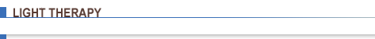

 LHE
Skin Rejuvenation Clinic is pleased to offer LHE IPL Treatment for Hair Removal, Acne and Skin Rejuvenation. LHE (Light Heat Energy) IPL (Intense Pulsed Light) is a versatile form of light therapy similar to laser. LHE uses a wider light spectrum and a larger spot size combined with heat to achieve excellent results in skin care and hair removal with minimal to no down time.
Photofacials and specialized treatments are available for acne clearance, smoothing of fine lines & wrinkles, reduction of age spots on the face and hands, hyperpigmentation, sun damage and broken capillaries. Photofacial course of treatment and frequency are determined by consultation.
Acne photofacial + LED
1 hour 20 minutes - $175 per treatment
Anti-aging photofacial + LED
1 hour 20 minutes - $295 per treatment
Long term Hair removal is taken to a new level with the use of LHE. Now large areas can be cleared with less pulses and less time. Smaller areas can also be combined with electrolysis for increased effectiveness and truly superb results. LHE is appropriate for almost any skin type and hair including darker complexions. A complimentary Hair Removal Consultation determines candidacy for treatment, frequency and pricing.
For complete method information please visit www.radiancy.com.
LED
LED (Light Emitting Diode) Photopulsation treatments are a truly painless and effective way to treat the skin for acne, the signs of aging, age spots and redness. This comfortable and non-invasive system uses red and blue light to diminish fine lines and wrinkles, smooth the skin and promote collagen, and create an oxygenated environment to fight acne by converting light energy into cell energy. In addition to these benefits, it is a superb and affordable supplement to any facial treatment and even electrolysis because the light treatment visibly calms the skin. This treatment requires no downtime and reduces inflammation following the skin manipulation of other treatments. It leaves the skin smoother and more refreshed and the body completely relaxed.
30 minutes - $100 per treatment
For more complete method information please visit www.revitalight.com